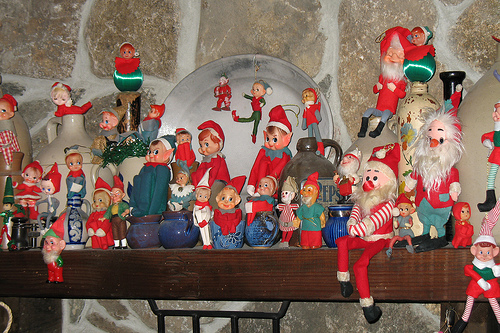

photo / Paul KeleherELFS, not ELVES!
Since it’s the holiday season, I feel compelled to share with the world an important piece of information I learned today, something I feel ashamed for not knowing: there is a distinction between elfs and elves.
The pluralization is all-important — elves indicates human-sized creatures like Legolas, while elfs indicates the tiny creatures, like the Keebler Elfs or Santa’s Elfs.


Recent comments